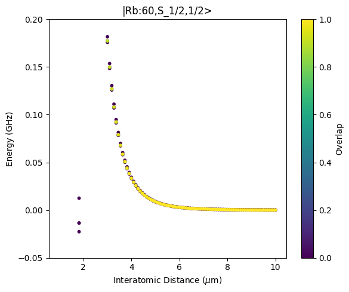
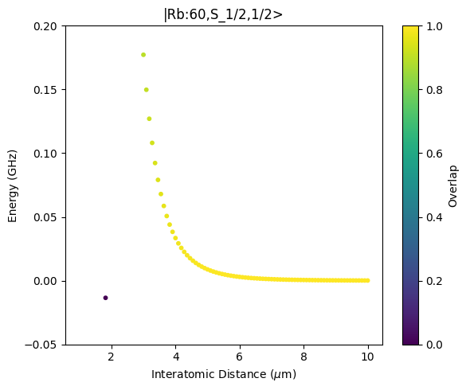
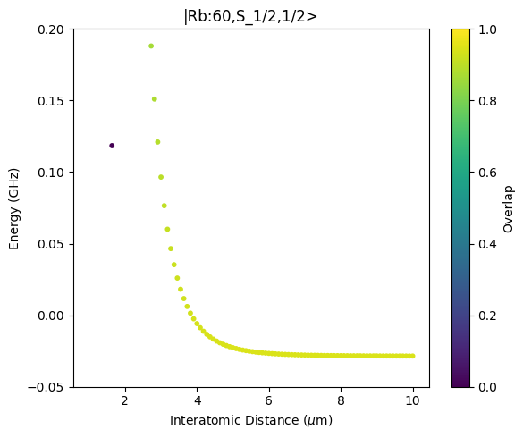
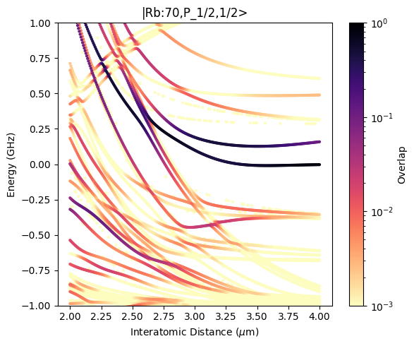
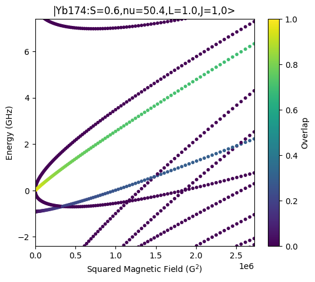

Overview over different applications of the new pairinteraction software
We released an alpha version of the new pairinteraction software on test.pypi.org. It can be installed with the following command on Linux, MacOS 13+, and Windows:
pip install --only-binary pairinteraction --index-url https://test.pypi.org/simple/ --extra-index-url https://pypi.org/simple/ pairinteraction
The new pairinteraction software allows for calculation Rydberg pair potentials, optionally considering electric and magnetic fields in arbitrary directions. The software is written so that it works equally well for atoms with a single valence electron and atoms which require multi-channel quantum defect theory. To achieve a high performance, the backend of the software is written in C++ and wrapped with nanobind, providing a Python interface. The construction of Hamiltonians is accelerated by using pre-calculated matrix elements, which are stored in database tables. These tables are automatically downloaded from GitHub when needed [1,2]. Once the tables are downloaded, they are cached locally and the software can be used without an internet connection.
Since the software is still under development, we would greatly appreciate your feedback. If you encounter any issues or if you have wishes for additional features, please let us know.
Over the next few months, we plan to implement the following improvements:
Consideration of more symmetries. The old version of pairinteraction made full use of symmetries to reduce the size of the Hamiltonian. We have the same goal for the new version.
Adding a more high-level Python interface. Currently, the Python interface is quite low-level. While this allows for a lot of flexibility and shows how the software works, a more high-level interface could make it easier to run the most common calculations, reducing the amount of code that has to be written by the user.
Adding a graphical user interface. We plan to add a graphical user interface, similarly to the one of the old pairinteraction software.
Improving the documentation of the Python API.
1. Prerequisites
Before running the example code in this notebook, you have to execute the code cell below to import the necessary libraries and initialize pairinteraction’s database that contains pre-calculated atomic states and matrix elements. By setting download_missing=True, database tables are automatically downloaded from GitHub when needed.
[1]:
import matplotlib.pyplot as plt
import numpy as np
import pairinteraction.real as pi
if pi.Database.get_global_database() is None:
pi.Database.initialize_global_database(download_missing=True)
2. How to use the software
Choosing a backend
The pairinteraction Python library offers two backends, for real- and complex-valued calculations: real and complex (complex-valued data types are only needed if a Hamiltonian contains complex elements as it is the case for fields pointing along the y-direction). In this notebook, we are using the real backend. Changing the backend might require restarting the kernel.
Modelling a single atom
The library is structured around Python classes that can be used to model systems of Rydberg atoms. For modelling a single atom, the following classes are available:
KetAtom: State of a single Rydberg atom, constructed from quantum numbers (if the specified quantum numbers do not match any of the pre-calculated states precisely, the closest state is used). You can display information about a state by using Python’sprintfunction on aKetAtomobject.BasisAtom: Basis of the single-atom Hilbert space, constructed from ranges of quantum numbers. The basis is initialized as the canonical basis of the Hilbert space, i.e., the basis is made up of basis vectors that each have a single non-zero element corresponding to a particularKetAtomstate.SystemAtom: System of a single Rydberg atom, constructed from aBasisAtomand the electric and magnetic fields acting on the atom. The class provides access to the atom’s Hamiltonian.
Modelling two atoms
Two single-atom systems can be combined to model a pair of atoms using the following classes:
BasisPair: Basis of a pair of atoms, constructed from twoSystemAtomobjects. For constructing the basis, the eigenstates of the Hamiltonians of the two atoms are used. The basis is initialized as the canonical basis where each basis vector has a single non-zero element corresponding to a tensor product of the eigenstates. The energy of the state, that is described by such a basis vector, is the sum of the eigenenergies. To keep the basis size manageable, you can truncate it by specifying an energy range.SystemPair: System of a pair of atoms, constructed from aBasisPairand the interaction between the atoms. This class provides access to the two-atom Hamiltonian.
Diagonalizing Hamiltonians
For plotting Stark maps / Zeeman maps / pair potentials, the eigenvalues of Hamiltonians are needed. You can diagonalize multiple Hamiltonians in parallel by passing a list of systems to the diagonalize function. The parallelization is implemented in C++, ensuring fast diagonalization. For example, here is how you can compute eigenvalues for different electric field strengths:
[2]:
basis = pi.BasisAtom("Rb", n=(57, 63), l=(0, 3))
systems = [pi.SystemAtom(basis).set_electric_field([0, 0, ez], unit="V/cm") for ez in [0, 0.1, 0.2, 0.3]]
pi.diagonalize(systems, diagonalizer="lapacke_evd", float_type="float64")
eigenvalues = [system.get_eigenvalues(unit="GHz") for system in systems]
To accelerate the diagonalization, we can reduce the precision by setting float_type="float32". The resulting numerical errors are typically negligible. A further speedup can be achieved by using diagonalizer="lapacke_evr" to compute eigenvalues ony in a specified energy range, for example, by passing energy=(-1, 1), energy_unit="MHz" to the diagonalize function. The absolute error in the coefficients of the eigenvectors can be controlled by setting atol (the default is 1e-6,
which is usually sufficient and compatible with float32).
Unit conversions
Many methods accept a unit parameter, such as set_electric_field and get_eigenvalues. This parameter allows you to chose in which units you want to set or obtain values. The pairinteraction software automatically performs the required unit conversions.
Code completion
The Python API of pairinteraction is designed so that code completion should work in Python development environments. For example, if you type pi.BasisAtom( and then press Ctrl+Space in Visual Studio Code, you should see a list of available arguments for the BasisAtom constructor.
Logging
The pairinteraction software supports Python’s logging module. You can adopt the following code to configure the log level and output format:
[3]:
import logging
logging.basicConfig(
level=logging.WARNING,
format="%(levelname)-8s [%(asctime)s.%(msecs)03d] [%(filename)s:%(lineno)d] %(message)s",
datefmt="%H:%M:%S",
)
Self testing
The pairinteraction software includes self tests that checks if the pairinteraction python module is working correctly. You can run the tests as follows:
[ ]:
from pairinteraction import run_module_tests
database = pi.Database.get_global_database()
assert run_module_tests(database.download_missing, database.database_dir) == 0
3. Basic example
The following example shows how to use the Python API to calculate a pair potential for rubidium.
[5]:
distances = np.linspace(1, 10, 100)
ket = pi.KetAtom("Rb", n=60, l=0, j=0.5, m=0.5)
pair_energy = 2 * ket.get_energy(unit="GHz")
# Single-atom system
basis = pi.BasisAtom("Rb", n=(ket.n - 3, ket.n + 3), l=(0, 3))
system = pi.SystemAtom(basis)
# Pair systems for different interatomic distances
pair_basis = pi.BasisPair([system, system], energy=(pair_energy - 3, pair_energy + 3), energy_unit="GHz")
pair_systems = [pi.SystemPair(pair_basis).set_distance(d, unit="micrometer") for d in distances]
print(f"Number of basis states of the pair system: {pair_basis.number_of_states}", flush=True)
# Diagonalize the systems in parallel and get the eigenvalues and overlaps
pi.diagonalize(pair_systems, diagonalizer="lapacke_evd", float_type="float32")
eigenvalues = np.array([system.get_eigenvalues(unit="GHz") for system in pair_systems])
overlaps = np.array([system.get_eigenbasis().get_overlaps([ket, ket]) for system in pair_systems])
distances = np.repeat(distances, eigenvalues.shape[1])
# Sort the data so that the pair potential with the largest overlap is on top of all other pair potentials
sorter = np.argsort(overlaps.flat)
overlaps = overlaps.flat[sorter]
eigenvalues = eigenvalues.flat[sorter]
distances = distances[sorter]
# Plot the pair potentials
fig = plt.figure(figsize=(6, 5))
ax = fig.add_subplot(111)
ax.set_title(f"|{ket}>")
scat = ax.scatter(distances, eigenvalues - pair_energy, c=overlaps, s=10, vmin=0, vmax=1)
fig.colorbar(scat, label="Overlap")
ax.set_ylim(-0.05, 0.2)
ax.set_xlabel(r"Interatomic Distance ($\mu$m)")
ax.set_ylabel("Energy (GHz)")
fig.tight_layout()
plt.show()
Number of basis states of the pair system: 172

4. Making use of symmetries
Because in the previous example, the interatomic axis was aligned with the quantization axis, the total quantum number m is conserved. In addition, the system is symmetric under permutation and inversion. If both symmetries are present, the product of the parities of the two atoms is conserved as well. In the following, we adapted the previous example to make use of these symmetries. For future versions of the pairinteraction software, we plan to support additional symmetries.
[6]:
distances = np.linspace(1, 10, 100)
ket = pi.KetAtom("Rb", n=60, l=0, j=0.5, m=0.5)
pair_energy = 2 * ket.get_energy(unit="GHz")
# Single-atom system
basis = pi.BasisAtom("Rb", n=(ket.n - 3, ket.n + 3), l=(0, 3))
system = pi.SystemAtom(basis)
# Pair systems for different interatomic distances
pair_basis = pi.BasisPair(
[system, system],
energy=(pair_energy - 3, pair_energy + 3),
energy_unit="GHz",
m=(1.0, 1.0), # Conserved because of interatomic axis along quantization axis
product_of_parities="EVEN", # Conserved because of inversion + permutation symmetry
)
pair_systems = [pi.SystemPair(pair_basis).set_distance(d, unit="micrometer") for d in distances]
print(f"Number of basis states of the pair system: {pair_basis.number_of_states}", flush=True)
# Diagonalize the systems in parallel and get the eigenvalues and overlaps
pi.diagonalize(pair_systems, diagonalizer="lapacke_evd", float_type="float32")
eigenvalues = np.array([system.get_eigenvalues(unit="GHz") for system in pair_systems])
overlaps = np.array([system.get_eigenbasis().get_overlaps([ket, ket]) for system in pair_systems])
distances = np.repeat(distances, eigenvalues.shape[1])
# Sort the data so that the pair potential with the largest overlap is on top of all other pair potentials
sorter = np.argsort(overlaps.flat)
overlaps = overlaps.flat[sorter]
eigenvalues = eigenvalues.flat[sorter]
distances = distances[sorter]
# Plot the pair potentials
fig = plt.figure(figsize=(6, 5))
ax = fig.add_subplot(111)
ax.set_title(f"|{ket}>")
scat = ax.scatter(distances, eigenvalues - pair_energy, c=overlaps, s=10, vmin=0, vmax=1)
fig.colorbar(scat, label="Overlap")
ax.set_ylim(-0.05, 0.2)
ax.set_xlabel(r"Interatomic Distance ($\mu$m)")
ax.set_ylabel("Energy (GHz)")
fig.tight_layout()
plt.show()
Number of basis states of the pair system: 19

5. Adding external fields
We can also add external electric and magnetic fields to the calculation. We let the fields point along the quantization axis so that the total quantum number m is still conserved.
[10]:
distances = np.linspace(1, 10, 100)
efield = [0, 0, 0.8]
bfield = [0, 0, 30]
ket = pi.KetAtom("Rb", n=60, l=0, j=0.5, m=0.5)
pair_energy = 2 * ket.get_energy(unit="GHz")
# Single-atom system
basis = pi.BasisAtom("Rb", n=(ket.n - 3, ket.n + 3), l=(0, 3))
system = (
pi.SystemAtom(basis)
.set_electric_field(efield, unit="V/cm")
.set_magnetic_field(bfield, unit="G")
.enable_diamagnetism(True)
)
system.diagonalize(
diagonalizer="lapacke_evd", float_type="float32"
) # The system must be diagonalized before using it to construct pair systems
# Pair systems for different interatomic distances
pair_basis = pi.BasisPair(
[system, system],
energy=(pair_energy - 3, pair_energy + 3),
energy_unit="GHz",
m=(1.0, 1.0), # Conserved because of interatomic axis along quantization axis
)
pair_systems = [pi.SystemPair(pair_basis).set_distance(d, unit="micrometer") for d in distances]
print(f"Number of basis states of the pair system: {pair_basis.number_of_states}", flush=True)
# Diagonalize the systems in parallel and get the eigenvalues and overlaps
pi.diagonalize(pair_systems, diagonalizer="lapacke_evd", float_type="float32")
eigenvalues = np.array([system.get_eigenvalues(unit="GHz") for system in pair_systems])
overlaps = np.array([system.get_eigenbasis().get_overlaps([ket, ket]) for system in pair_systems])
distances = np.repeat(distances, eigenvalues.shape[1])
# Sort the data so that the pair potential with the largest overlap is on top of all other pair potentials
sorter = np.argsort(overlaps.flat)
overlaps = overlaps.flat[sorter]
eigenvalues = eigenvalues.flat[sorter]
distances = distances[sorter]
# Plot the pair potentials
fig = plt.figure(figsize=(6, 5))
ax = fig.add_subplot(111)
ax.set_title(f"|{ket}>")
scat = ax.scatter(distances, eigenvalues - pair_energy, c=overlaps, s=10, vmin=0, vmax=1)
fig.colorbar(scat, label="Overlap")
ax.set_ylim(-0.05, 0.2)
ax.set_xlabel(r"Interatomic Distance ($\mu$m)")
ax.set_ylabel("Energy (GHz)")
fig.tight_layout()
plt.show()
Number of basis states of the pair system: 33

6. Dipole-quadrupole and quadrupole-quadrupole interaction
By default, the pairinteraction software includes dipole-dipole interaction. We can consider the multipole expansion up to dipole-quadrupole or quadrupole-quadrupole by setting the order of the interaction to 3 or 4, respectively.
[11]:
order = 5 # 3: dipole-dipole, 4: up to dipole-quadrupole, 5: up to quadrupole-quadrupole
distances = np.linspace(2, 4, 300)
ket = pi.KetAtom("Rb", n=70, l=1, j=0.5, m=0.5)
pair_energy = 2 * ket.get_energy(unit="GHz")
# Single-atom system
basis = pi.BasisAtom("Rb", n=(ket.n - 3, ket.n + 3), l=(0, 4))
system = pi.SystemAtom(basis)
# Pair systems for different interatomic distances
pair_basis = pi.BasisPair(
[system, system],
energy=(pair_energy - 4, pair_energy + 4),
energy_unit="GHz",
m=(2 * ket.m, 2 * ket.m), # Conserved because of interatomic axis along quantization axis
)
pair_systems = [pi.SystemPair(pair_basis).set_order(order).set_distance(d, unit="micrometer") for d in distances]
print(f"Number of basis states of the pair system: {pair_basis.number_of_states}", flush=True)
# Diagonalize the systems in parallel and get the eigenvalues and overlaps
pi.diagonalize(pair_systems, diagonalizer="lapacke_evd", float_type="float32")
eigenvalues = np.array([system.get_eigenvalues(unit="GHz") for system in pair_systems])
overlaps = np.array([system.get_eigenbasis().get_overlaps([ket, ket]) for system in pair_systems])
distances = np.repeat(distances, eigenvalues.shape[1])
# Sort the data so that the pair potential with the largest overlap is on top of all other pair potentials
sorter = np.argsort(overlaps.flat)
overlaps = overlaps.flat[sorter]
eigenvalues = eigenvalues.flat[sorter]
distances = distances[sorter]
# Plot the pair potentials
fig = plt.figure(figsize=(6, 5))
ax = fig.add_subplot(111)
ax.set_title(f"|{ket}>")
scat = ax.scatter(distances, eigenvalues - pair_energy, c=overlaps, s=4, vmin=1e-3, vmax=1, norm="log", cmap="magma_r")
fig.colorbar(scat, label="Overlap")
ax.set_ylim(-1, 1)
ax.set_xlabel(r"Interatomic Distance ($\mu$m)")
ax.set_ylabel("Energy (GHz)")
fig.tight_layout()
plt.show()
Number of basis states of the pair system: 476

7. Comparison to literature results for Yb171 and Yb174
The new version of pairinteraction supports atomic species with two valence electrons such as Yb171 and Yb174, using multi-channel quantum defect theory. To ensure the correctness of our calculations, we reproduce findings of the publication M. Peper et al., Spectroscopy and modeling of 171Yb Rydberg states for high-fidelity two-qubit gates”, 2024. In this publication, the authors carefully benchmarked their results against experimental data. Thus, by reproducing their results, we can be confident that our software provides accurate predictions as well.
As a first check, we reproduce the Zeeman map for Yb174 that is shown in Fig. 13 of the publication. The Zeeman map takes into account diamagnetism.
[12]:
# Get the state of interest
ket = pi.KetAtom("Yb174_mqdt", nu=50, s=1, l=1, j=1, m=0)
energy_in_ghz = ket.get_energy(unit="GHz")
# Construct a basis around the state
basis = pi.BasisAtom("Yb174_mqdt", nu=(ket.nu - 3, ket.nu + 3), j=(0, 2))
# Construct and diagonalize systems for different magnetic fields
list_bfield_in_gauss = np.linspace(0, 1650, 100)
list_system = [
pi.SystemAtom(basis).set_magnetic_field([0, 0, b], unit="G").enable_diamagnetism(True) for b in list_bfield_in_gauss
]
pi.diagonalize(list_system, diagonalizer="lapacke_evd", float_type="float32")
# Get eigenvalues and overlaps
list_eigenvalues = np.array([system.get_eigenvalues(unit="GHz") for system in list_system])
list_overlap = np.array([system.get_eigenbasis().get_overlaps(ket) for system in list_system])
# Plot the Zeeman map
fig = plt.figure(figsize=(6, 5))
ax = fig.add_subplot(111)
ax.set_title(f"|{ket}>")
scat = ax.scatter(
np.repeat(list_bfield_in_gauss, list_eigenvalues.shape[1]) ** 2,
list_eigenvalues - energy_in_ghz,
c=list_overlap,
s=10,
vmin=0,
vmax=1,
)
fig.colorbar(scat, label="Overlap")
ax.set_xlim(0, list_bfield_in_gauss[-1] ** 2)
ax.set_ylim(-2.4, 7.4)
ax.set_xlabel(r"Squared Magnetic Field (G$^2$)")
ax.set_ylabel("Energy (GHz)")
plt.show()

As a second check, we reproduce the pair potentials for Yb171 that are displayed in Fig. 7a of the publication. The pair potentials are calculated for a magnetic field pointing along the z-axis and the interatomic axis pointing along the x-axis. Because this arrangement breaks rotational symmetry, the total magnetic quantum number is not conserved and two-atom Hilbert space is rather large. Therefore, the calculation of the pair potentials can take a few minutes.
[17]:
if False: # Run this cell only if you are okay with waiting for a few minutes
# Get the state of interest
ket = pi.KetAtom("Yb171_mqdt", nu=54.56, l=0, f=3 / 2, m=3 / 2)
# Construct a basis around the state
basis = pi.BasisAtom("Yb171_mqdt", nu=(ket.nu - 2, ket.nu + 2), f=(0.5, 2.5))
# Construct and diagonalize a system for a single atom
system = (
pi.SystemAtom(basis)
.set_magnetic_field([0, 0, 5.03], unit="G")
.enable_diamagnetism(True)
.diagonalize(diagonalizer="lapacke_evr", float_type="float32")
)
idx = np.argmax(system.get_eigenbasis().get_overlaps(ket))
pair_energy_shifted = 2 * system.get_eigenvalues(unit="MHz")[idx]
# Construct a basis for a pair of atoms
basis_pair = pi.BasisPair(
[system, system], energy=(pair_energy_shifted - 4e3, pair_energy_shifted + 4e3), energy_unit="MHz"
)
print(f"Pair basis size: {basis_pair.number_of_states}", flush=True)
# Construct and diagonalize systems for different interatomic distances
list_distances = np.linspace(2, 10, 100)
list_system = [pi.SystemPair(basis_pair).set_distance_vector([d, 0, 0], unit="um") for d in list_distances]
pi.diagonalize(
list_system,
diagonalizer="lapacke_evr",
float_type="float32",
energy_range=(pair_energy_shifted - 20, pair_energy_shifted + 20),
energy_unit="MHz",
atol=1e-7,
)
# Get eigenvalues and overlaps
list_eigenvalues = [system.get_eigenvalues(unit="MHz") for system in list_system]
list_overlap = [system.get_eigenbasis().get_overlaps([ket, ket]) for system in list_system]
list_distances = [d * np.ones_like(e) for d, e in zip(list_distances, list_eigenvalues)]
# Plot the pair potential
list_eigenvalues = np.hstack(list_eigenvalues)
list_overlap = np.hstack(list_overlap)
list_distances = np.hstack(list_distances)
sorter = np.argsort(list_overlap)
list_distances = list_distances[sorter]
list_eigenvalues = list_eigenvalues[sorter]
list_overlap = list_overlap[sorter]
fig = plt.figure(figsize=(6, 5))
ax = fig.add_subplot(111)
ax.set_title(f"|{ket}>")
scat = ax.scatter(
list_distances,
list_eigenvalues - pair_energy_shifted,
c=list_overlap,
s=4,
vmin=1e-3,
vmax=1,
norm="log",
cmap="magma_r",
)
fig.colorbar(scat, label="Overlap")
ax.set_xlim(2, 10)
ax.set_ylim(-20, 20)
ax.set_xlabel(r"Interatomic Distance ($\mu$m)")
ax.set_ylabel("Energy (MHz)")
plt.show()
Pair basis size: 4052

[ ]: